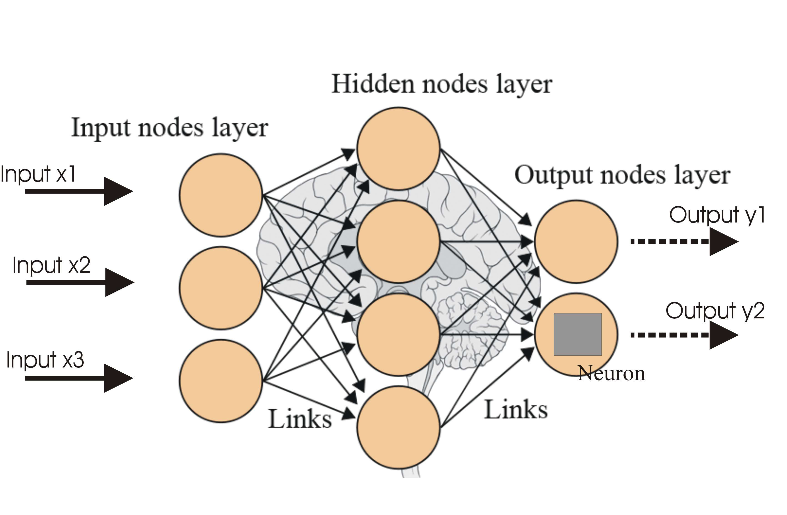
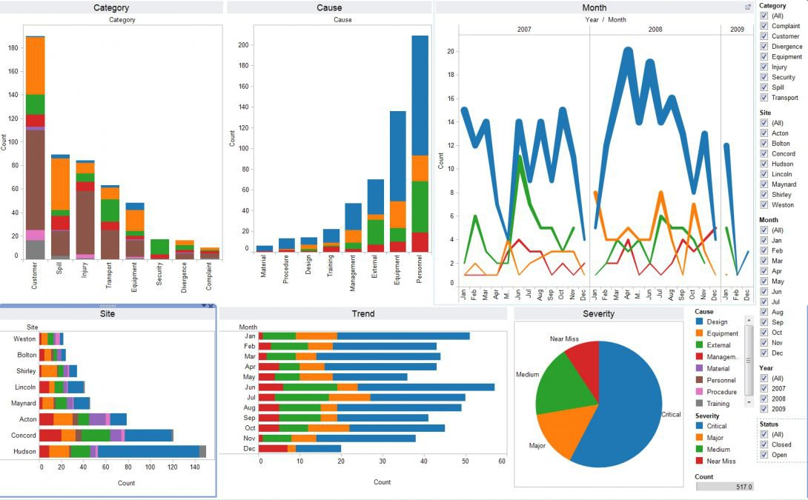
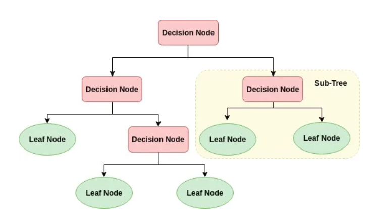

Data Exploration of Weeklyshop dataset in SQL Server

Comparison of different ML models on Liver Patient Dataset.
.

Research Paper on usage of Deep Learning in Underwater Target Detection in SONAR.

Data-driven insights and Dashboards, using Tableau

This project revolves around the notion that how tree-models are effictive for small datasets

We have created a Dashboard in Power based on a Job-Survey Data.

Using MATLAB, we've used several image processing methods to carry out a variety of operations, including edge detection, segmentation, and face detection.

In this project, we deploy Machine Learning model using Covid-19 Dataset, in Jupyter Notebook.